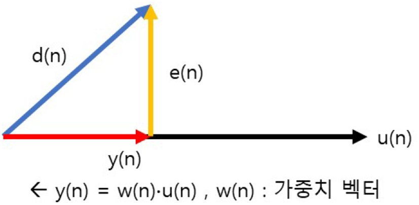

연구실적 · 국내전문학술지
압축센싱 기반의 UWB 클러터 제거를 통한 비행 드론의 근거리 탐지 성능 개선
Compressed Sensing Based Clutter Rejection of UWB Radar for Near Field Detection of Moving Drones

초록
UWB(Ultra Wideband Radar) 레이더는 매우 좁은 펄스를 사용하여 근거리 드론을 보다 높은 분해능으로 탐지 가능 하고, 광대역을 사용하여 투과성이 좋아 효율적인 물체 탐지에 적합하다. 본 연구에서는 군집 드론 시스템에서는 이동 드론의 충돌 방지를 위해 레이다 센서를 도입한다. UWB 레이더를 이용해 드론을 탐지하는 실험을 수행하고, 드론 탐지 신호의 거리 및 속도 정보 정확도를 개선하기 위한 방안을 제안한다. 탐지 정확도를 개선하기 위해서는 수신 잡음을 제거하는 과정이 필요한데, 기존의 LMS 적응 필터를 이용하면 표적신호를 클러터로 판단해 오경보율을 높이는 현상이 발생한다. 본 논문에서는 압축센싱 기반의 알고리즘을 적용한 선별적 필터 알고리즘을 설계하여 오경보율을 일정하게 유지하면서 클러터를 효과적으로 제거하는 방안을 제시하고자 한다.
사이트 원문 표기
Saemi Lee (이새미), Hyungil Chun (천형일), Wookyung Lee (이우경), “압축센싱 기반의 UWB 클러터 제거를 통한 비행 드론의 근거리 탐지 성능 개선”, 한국국방기술학회 논문지, 제3권 1호, 2021년
BibTeX
@article{Lee_2021,
title={Compressed Sensing Based Clutter Rejection of UWB Radar for Near Field Detection of Moving Drones},
volume={3},
ISSN={2765-5598},
url={http://dx.doi.org/10.52682/jkidt.2021.3.1.1},
DOI={10.52682/jkidt.2021.3.1.1},
number={1},
journal={Journal of The Korean Institute of Defense Technology},
publisher={The Korean Institute of Defense Technology},
author={Lee, Saemi and Chun, Hyungil and Lee, Wookyung},
year={2021},
month=Mar,
pages={001–005}
}